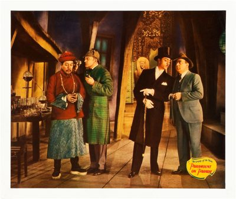

Paramount on Parade

Starring: Jean Arthur, Richard Arlen, George Bancroft
Director: Edmund Goulding, Dorothy Arzner, Otto Brower
Writer: Joseph L. Mankiewicz
Producer: Jesse Louis Lasky, Adolph Zukor, Elsie Janis
Paramount on Parade is a 1930 all-star American pre-Code revue released by Paramount Pictures, directed by several directors including Edmund Goulding, Dorothy Arzner, Ernst Lubitsch, Rowland V. Lee, A. Edward Sutherland, Lothar Mendes, Otto Brower, Edwin H. Knopf, Frank Tuttle, and Victor Schertzinger—all supervised by the production supervisor, singer, actress, and songwriter Elsie Janis.
Trivia
- Paramount on Parade, released on April 22, 1930, was Paramount's answer to all-star revues like Hollywood Revue of 1929 from Metro-Goldwyn-Mayer, The Show of Shows from Warner Bros., and King of Jazz from Universal Studios.
- MacDonald’s duet with Nino Martini is in the French version of the film, but was reshot for the English language version.) Cecil B. DeMille was also not involved in the revue as he had moved to Metro-Goldwyn-Mayer in 1928 and would not return until 1932 to direct The Sign of the Cross.
Previous Showings
2 Runs • 2 Festivals
All runs on record (2):
- February 18 - 19, 2001Hollywood Musicals, 1929-1939w/ Glorifying the American Girl
- March 27 - 28, 2018Paramount Pictures That played at the Stanford Theatre From 1930 to 1935w/ If I Had a Million